Mechanical Engineer | Mechanical Design & CAE
FEA | SolidWorks | Ansys | Optimization | Automation | Robotics
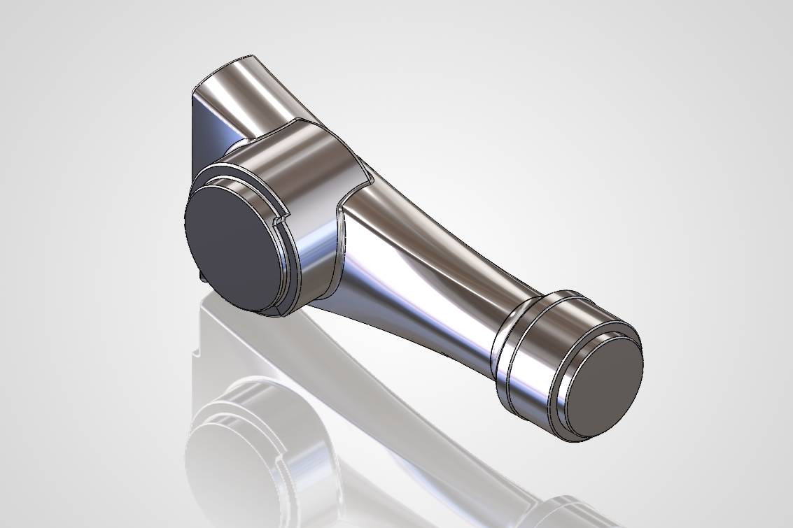
This project focused on the lightweight redesign of a robot arm link using static structural analysis, eigenvalue buckling analysis, and topology optimization. The original V1 geometry was first evaluated under the selected loading and boundary conditions. After the baseline analysis, topology optimization was used to identify the main load-transfer regions and the lower-density areas where material could be removed.
The final V2 design was created based on the topology result. The topology output was not used directly as the final CAD geometry because it produced an irregular mesh-based shape. Instead, it was used as a load-path guide to create a cleaner and manufacturable redesign with controlled cutouts and preserved interface regions.
Reducing the mass of a moving robot-arm link can improve structural mass efficiency while reducing the inertia carried by the robot during acceleration and deceleration. The engineering challenge was therefore to remove unnecessary material without introducing excessive deformation, stress, or loss of structural stability.
Tools: SolidWorks, ANSYS Mechanical
Reference Model: KR16-Type Robot Arm Link
Related Sectors: Industrial Robotics & Automation, Automotive Manufacturing, General Manufacturing, Material Handling & Logistics, Advanced Manufacturing
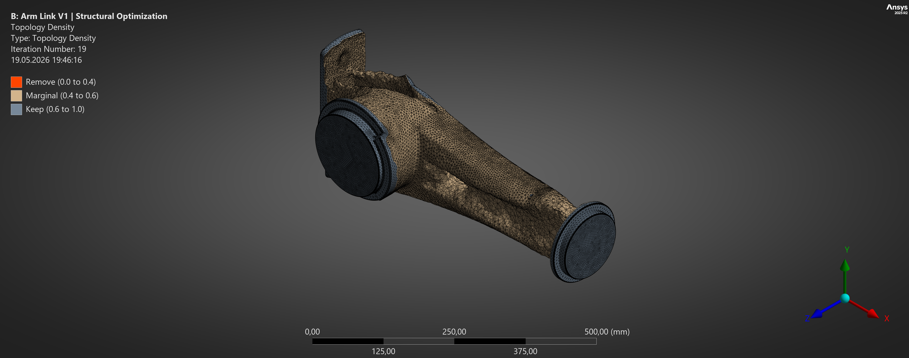
The final V2 design achieved a substantial mass reduction while maintaining low absolute stress and deformation levels and a large buckling stability margin under the selected load case.
| Achievement | V1 | V2 | Change |
|---|---|---|---|
| Total mass | 34.439 kg | 25.408 kg | -26.22% |
| Max von Mises stress | 1.954 MPa | 6.1475 MPa | +214.6% |
| Max total deformation | 0.022452 mm | 0.041385 mm | +84.3% |
| Max elastic strain | 2.734E-05 | 8.574E-05 | +213.6% |
| First buckling load multiplier | 20,303 | 2,970.6 | -85.37% |
The main achievement was the removal of approximately 9.03 kg of material, reducing the arm-link mass by 26.22%. The increase in stress and deformation reflects the expected stiffness tradeoff after substantial material removal, while the final absolute values remained low.
Although the first buckling load multiplier decreased significantly relative to the V1 baseline, the V2 value remained at 2,970.6, far above the critical value of 1. The final design therefore achieved a major improvement in mass efficiency while retaining a large structural stability margin.
The main goal was to reduce the mass of the robot arm link while keeping the static response and buckling stability within a safe range. The redesign focused on removing material from low-density regions suggested by topology optimization, while keeping the main hub, wrist-end interface, support region, and load-transfer paths intact.
V1 Baseline
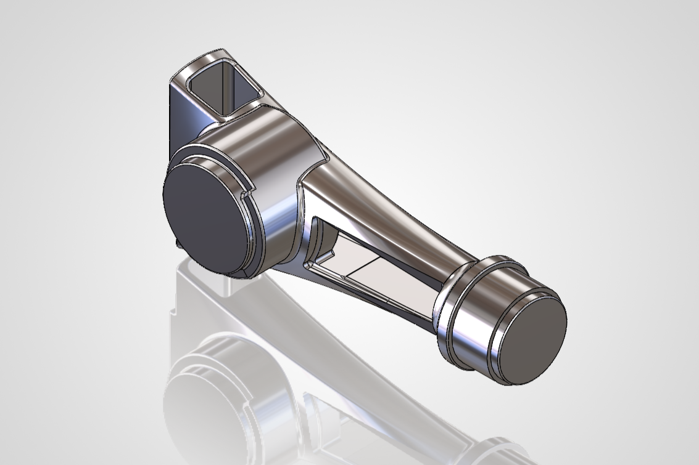
V2 Final Iteration
The study focused on the main robot arm link body. The surrounding robot assembly, bearings, bolts, and detailed contact behavior were not fully modeled in this iteration. The purpose was to compare the original and redesigned arm link under identical boundary conditions and evaluate whether the V2 geometry could reduce mass without creating an unacceptable penalty in static stress, deformation, or buckling stability.
Eigenvalue buckling was used as a stability check. The buckling result was interpreted as a comparative indicator between V1 and V2 rather than as a full nonlinear collapse prediction.
The loading scenario was anchored to the manufacturer-rated 20 kg maximum payload of the KR16 reference platform. Relevant industrial robot standards such as ISO 9283 and ISO 10218 provide performance and safety frameworks, but the structural FEA load case in this study was defined as an engineering validation scenario rather than a prescribed certification test.
The model was analyzed in ANSYS Mechanical using Static Structural, Topology Optimization, and Eigenvalue Buckling analyses. Standard Earth gravity was included. A 2g dynamic load factor was applied to all inertial loads to account for operational accelerations. The wrist-side remote force was calculated from the combined mass of the wrist, revolver, and maximum payload package. The wrist mass was 5.168 kg, the revolver mass was 6.744 kg, and the maximum payload package was taken as 20 kg based on the KUKA datasheet, giving a total supported mass of 31.912 kg. This resulted in 31.912 kg × 9.81 m/s² × 2 ≈ 626 N. Servo motor masses were estimated from manufacturer datasheets and converted in the same way, resulting in remote forces of 491 N for the large servo, 274 N for 2 standard servos mounted in the same area, and 137 N for 1 standard servo mounted separately.
The base-side cylindrical interface was constrained using Remote Displacement to represent its connection to the preceding robot joint. Remote Forces were used at the wrist and servo mounting regions because the attached components were not included as full structural bodies; their equivalent operational loads were instead transferred through the corresponding mounting interfaces.
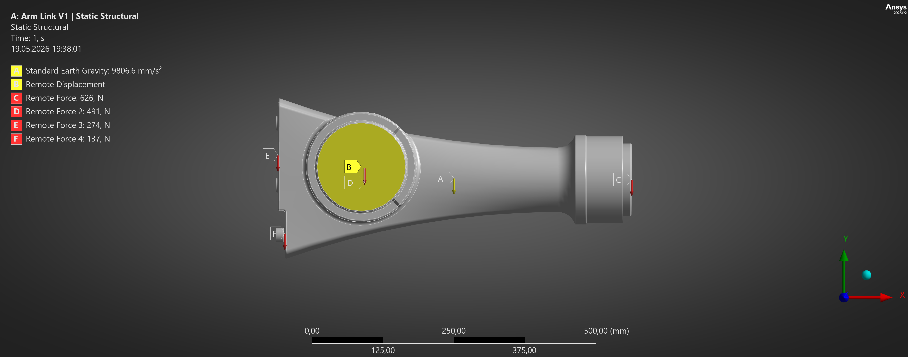
Analysis Setup
| Item | Value |
|---|---|
| Material | Aluminum 7075-T6 |
| Analyzed part | Robot arm link |
| Optimized part | Main arm link body |
| Support condition | Remote displacement at the fixed interface |
| Load condition | Standard Earth gravity + remote force inputs from wrist and servo motor masses |
| Main wrist-side load | 626 N remote force |
| Servo load definition | Servo masses estimated from datasheets and converted into remote forces |
| Dynamic load factor | 2g applied to inertial loads |
| Analyses | Static Structural + Topology Optimization + Eigenvalue Buckling |
| Static mesh levels | Coarse, Medium, Fine |
| Buckling setup | First three positive buckling modes |
Topology optimization was performed after the baseline static setup was completed. The objective was to minimize compliance with a 50% mass retention target. The result showed that the main load paths were carried through the upper and lower structural regions, while the middle and rear body regions had lower-density areas that could be reduced.
Topology Settings
| Topology Setting | Value |
|---|---|
| Objective | Minimize compliance |
| Mass retention target | 50% |
| Maximum iterations | 500 |
| Convergence accuracy | 0.1% |
| Final iteration | 19 |
| Retained mass at 0.5 threshold | 17.43 kg |
| Retained mass ratio at 0.5 threshold | 50.613% |
The topology result was used as a design guide rather than a direct CAD output.
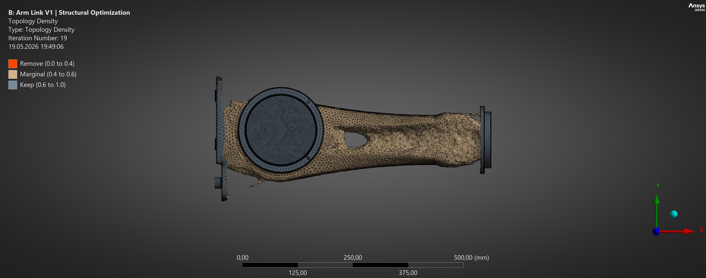
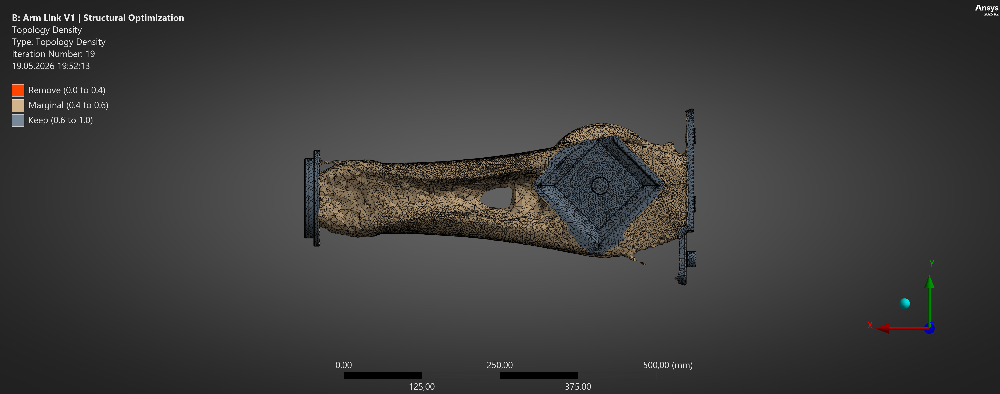
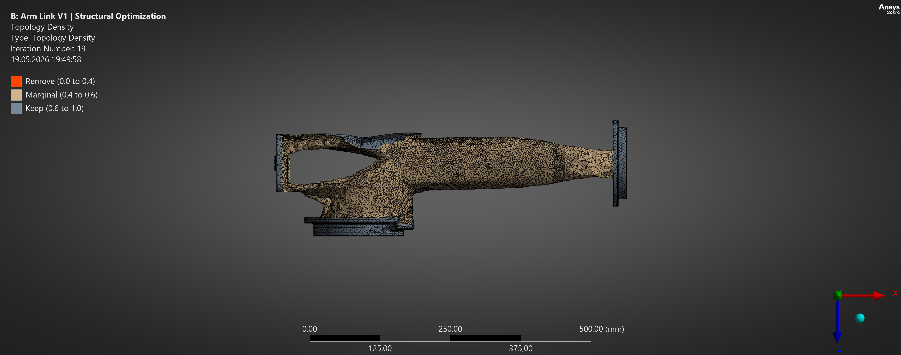
The V1 model was the original robot arm link geometry. It had a continuous main body between the large hub region and the wrist-end cylindrical interface. The baseline geometry was structurally safe under the selected static load case, but it also contained material in regions where the topology result later indicated lower contribution to the main load path.
The V2 design introduced controlled material removal from the middle and rear body regions of the arm link. The large hub, wrist-end interface, fixed support region, and main upper and lower load paths were preserved. The wrist-end cylindrical interface was also slightly refined by reducing the secondary outer cylinder diameter, while keeping the wrist-side load transfer region and connection geometry intact. The redesign avoided copying the irregular topology shape directly and instead translated the result into cleaner cutouts with smoother transitions.
V1 Baseline
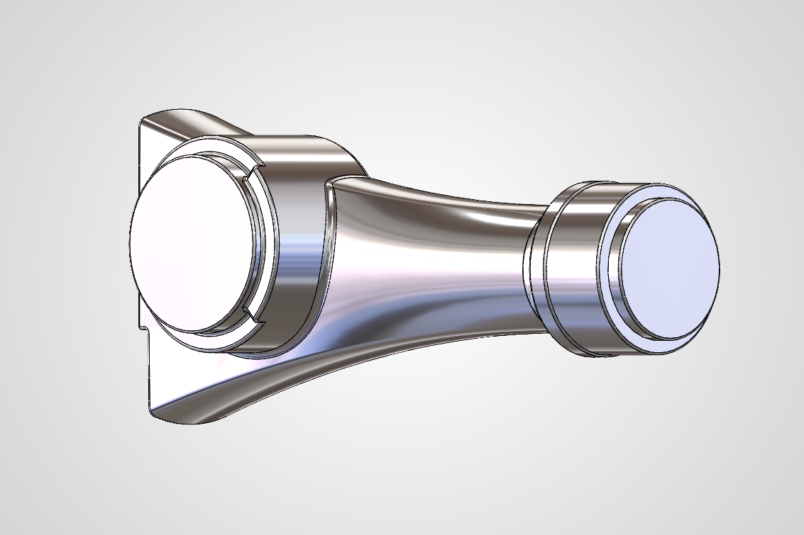
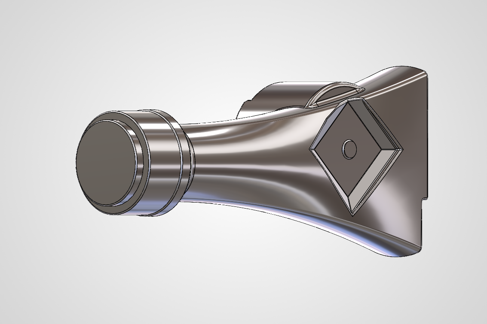
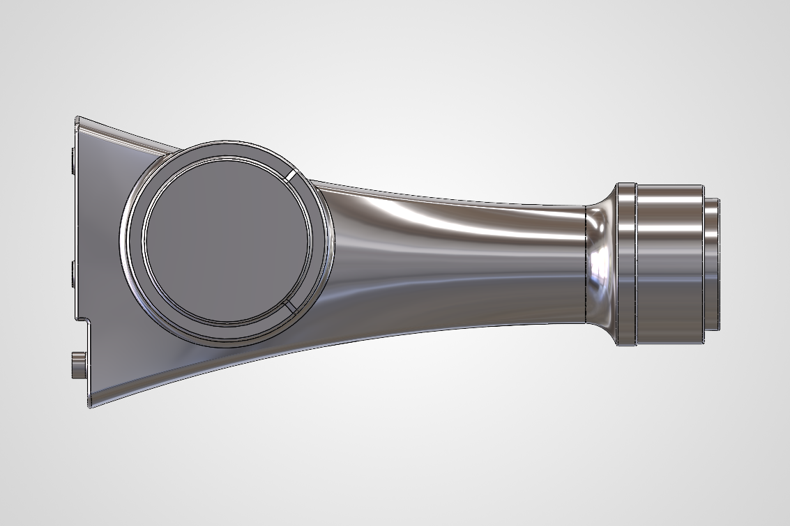
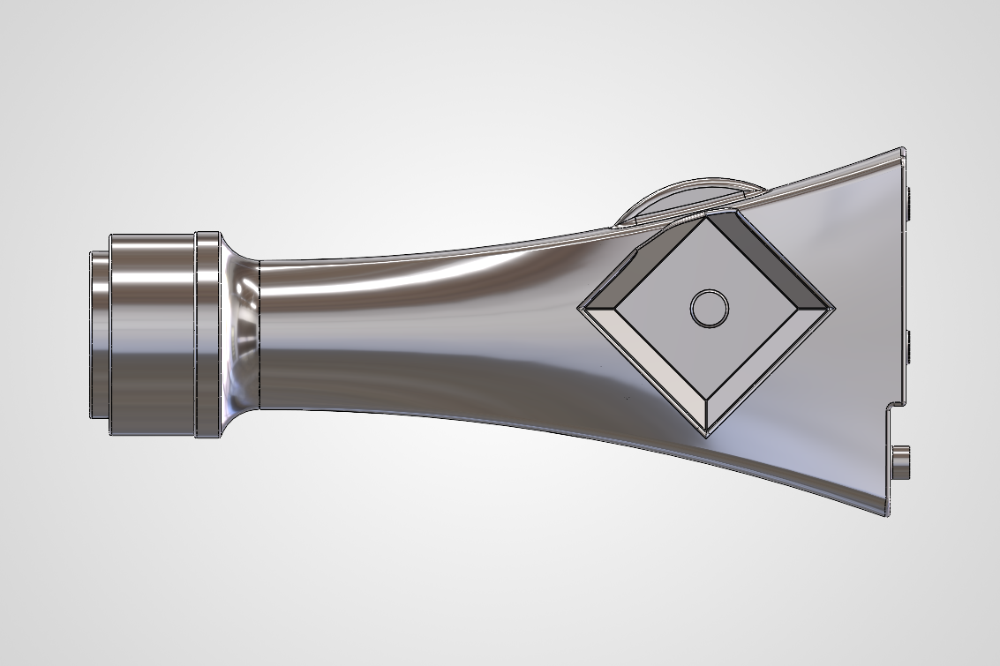
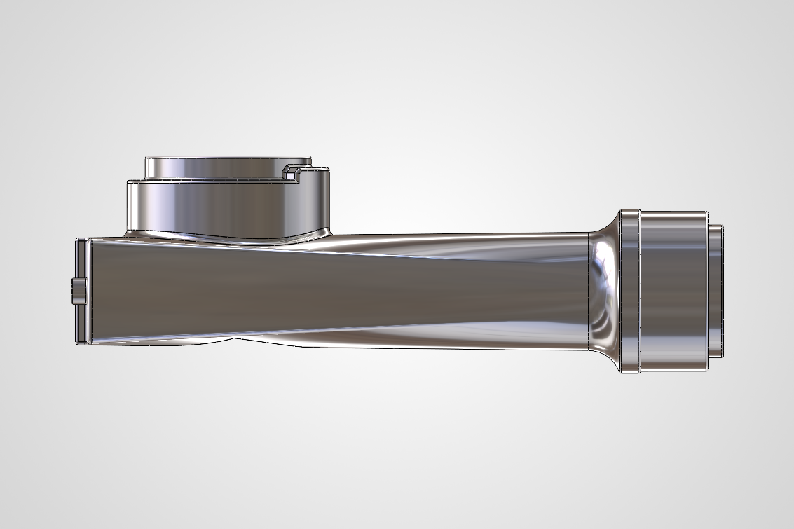
V2 Final Iteration
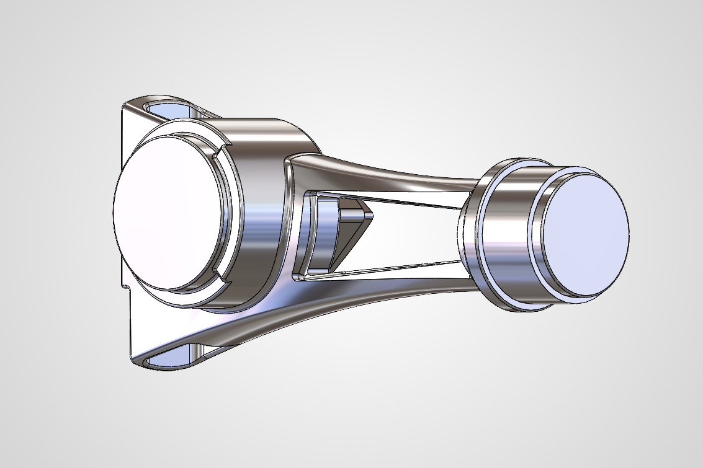
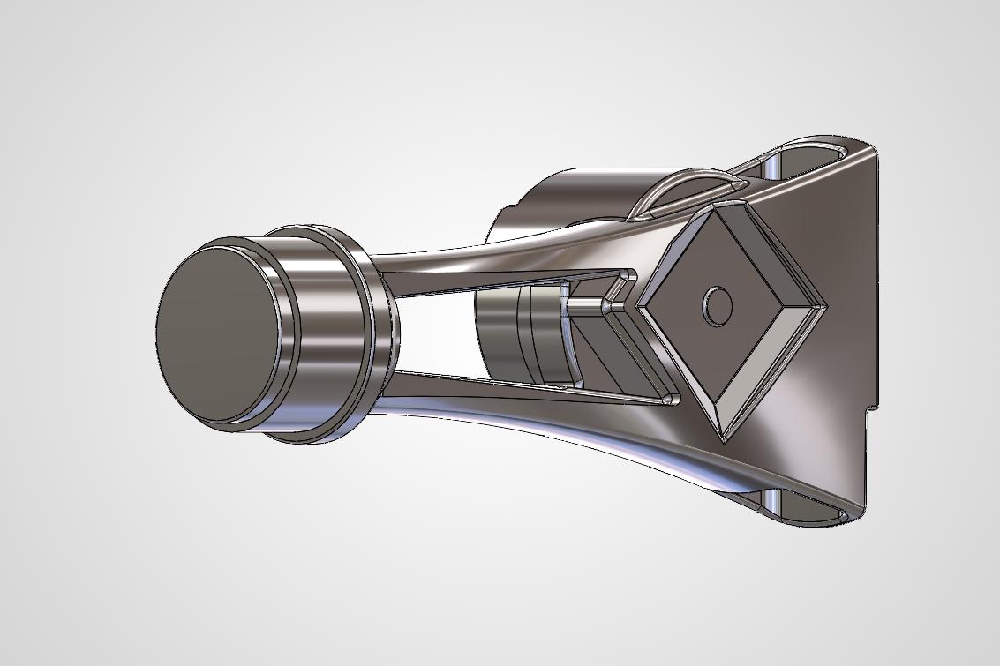
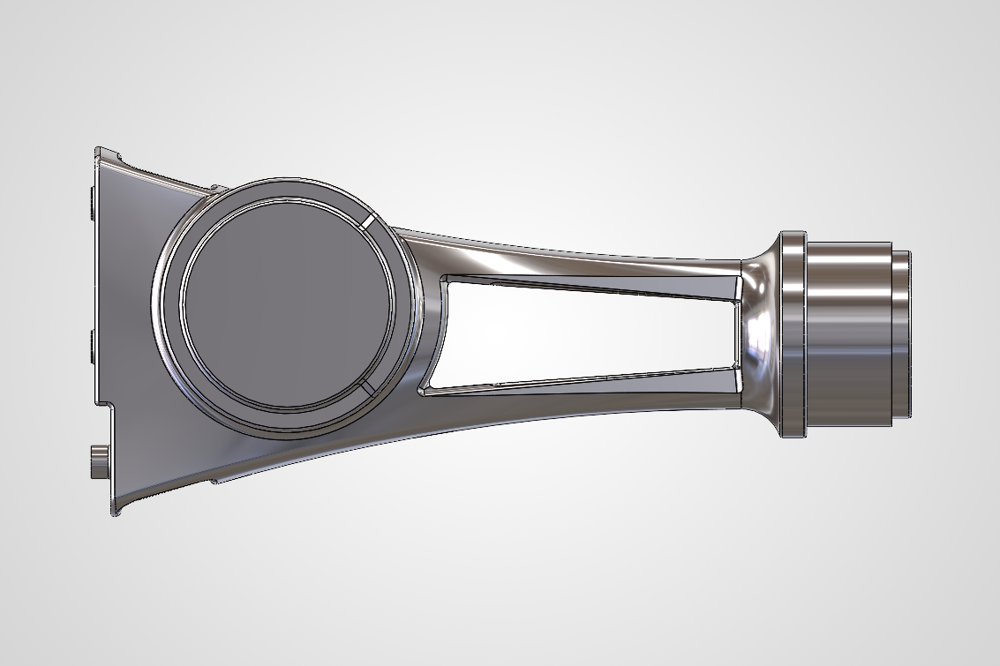
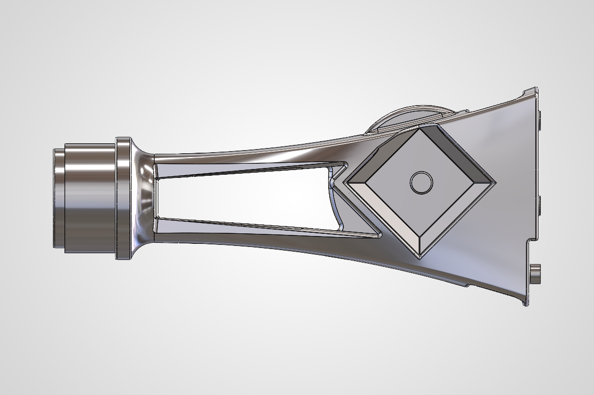
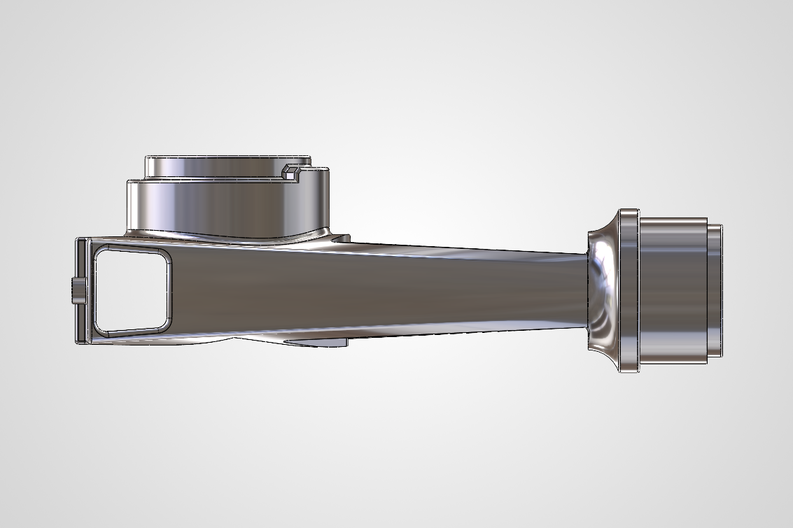
The final V2 geometry reduced the mass from 34,438.78 g to 25,408.36 g, corresponding to a 26.22% mass reduction.
Mass Comparison
| Metric | V1 Baseline | V2 Final | Change |
|---|---|---|---|
| Mass | 34,438.78 g | 25,408.36 g | -26.22% |
| Volume | 12,255,795.15 mm³ | 9,042,121.97 mm³ | -26.22% |
| Surface area | 403,549.37 mm² | 477,433.22 mm² | +18.31% |
The final V2 design removed 9,030.42 g of material while preserving the main connection and load-transfer regions of the original arm link.
To assess mesh sensitivity, three mesh configurations were tested for both the V1 baseline and the V2 final geometry. The stress, total deformation, and elastic strain values were compared across coarse, medium, and fine meshes. The fine mesh results were selected as the final static values for both designs.
V1 Static Mesh Convergence
| Mesh | Global / Local Size | Max von Mises Stress | Max Total Deformation | Max Elastic Strain |
|---|---|---|---|---|
| Coarse | 8 / 4 mm | 1.7004 MPa | 0.022443 mm | 2.384E-05 |
| Medium | 6 / 3 mm | 1.903 MPa | 0.022448 mm | 2.660E-05 |
| Fine | 4 / 2 mm | 1.954 MPa | 0.022452 mm | 2.734E-05 |
Between the medium and fine meshes, the V1 stress changed by 2.68%, deformation changed by 0.018%, and elastic strain changed by 2.78%.
V2 Static Mesh Convergence
| Mesh | Global / Local Size | Max von Mises Stress | Max Total Deformation | Max Elastic Strain |
|---|---|---|---|---|
| Coarse | 8 / 4 mm | 5.895 MPa | 0.041343 mm | 8.2192E-05 |
| Medium | 6 / 3 mm | 6.0658 MPa | 0.041367 mm | 8.4629E-05 |
| Fine | 4 / 2 mm | 6.1475 MPa | 0.041385 mm | 8.574E-05 |
Between the medium and fine meshes, the V2 stress changed by 1.35%, deformation changed by 0.044%, and elastic strain changed by 1.31%. These results indicate that the final V2 static solution was stable under mesh refinement. Buckling analysis was performed using the same mesh configuration as the static analysis to maintain consistency across analyses. Mesh sensitivity for the static solution was verified separately.
The final V2 design reduced mass significantly, but stress and deformation increased compared with the V1 baseline. This was expected because material was removed from the structure. Even after the redesign, the final stress and deformation values remained low under the selected load case.
Static Results
| Metric | V1 Baseline | V2 Final | Change |
|---|---|---|---|
| Max von Mises Stress | 1.954 MPa | 6.1475 MPa | +214.6% |
| Max Total Deformation | 0.022452 mm | 0.041385 mm | +84.3% |
| Max Elastic Strain | 2.734E-05 | 8.574E-05 | +213.6% |
Although the percentage increase in stress is large, the absolute value remained low. The maximum von Mises stress in V2 was 6.1475 MPa, corresponding to approximately 1.2% of the 7075-T6 yield strength of 503 MPa. The structural safety margin remained large.
V1 Baseline Equivalent (von-Mises) Stress Result
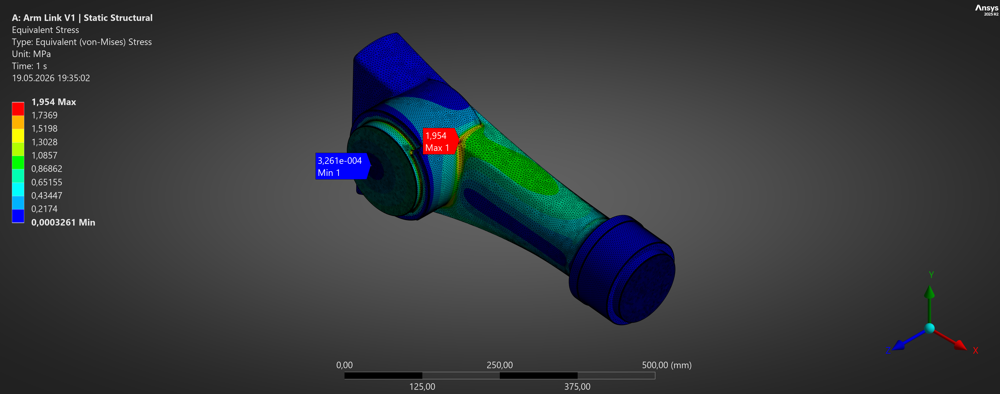
V2 Final Equivalent (von-Mises) Stress Result
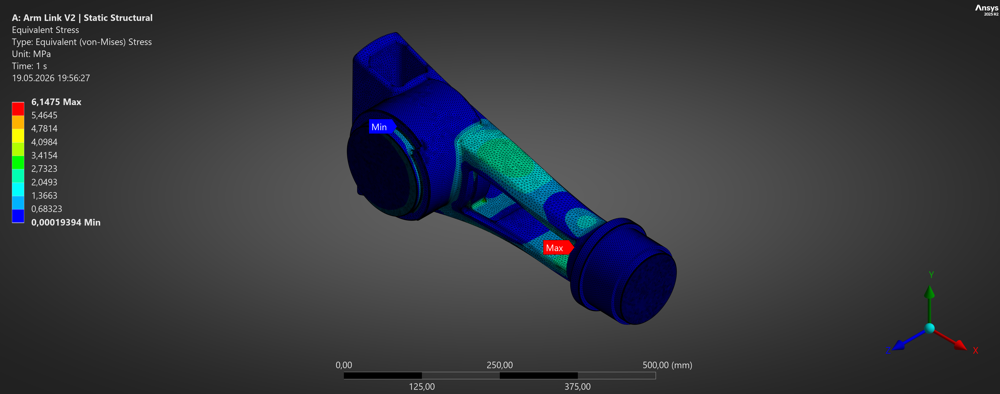
Eigenvalue buckling analysis was performed as a stability check for both V1 and V2. Negative load multipliers were disabled, and the first three positive buckling modes were extracted. This made the V1 and V2 buckling comparison cleaner and easier to interpret.
Buckling Load Multipliers
| Mode | V1 Load Multiplier | V2 Load Multiplier |
|---|---|---|
| Mode 1 | 20,303 | 2,970.6 |
| Mode 2 | 38,327 | 4,108.6 |
| Mode 3 | 39,858 | 4,395.8 |
The first buckling load multiplier decreased from 20,303 in V1 to 2,970.6 in V2. This is a large reduction, but the V2 value remained far above 1, which indicates that the redesigned arm link still had a large buckling stability margin under the applied load case.
Although the buckling load multiplier decreased by 85% relative to the baseline, the V2 value of 2,970.6 remains far beyond any realistic operational loading scenario, confirming the structural viability of the topology-optimized geometry.
V1 Baseline Buckling Result
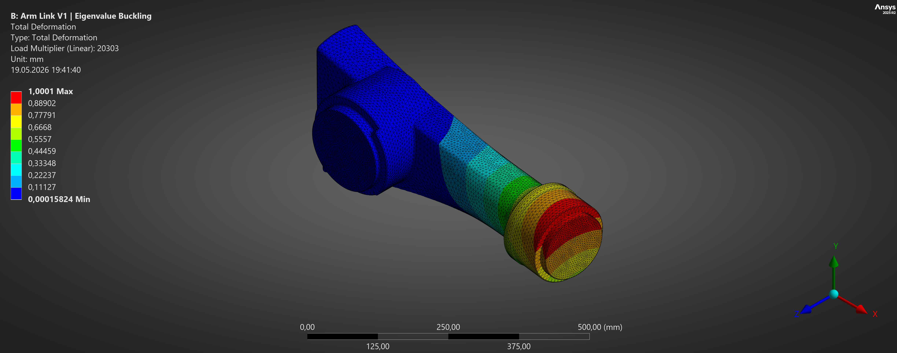
V2 Final Buckling Result
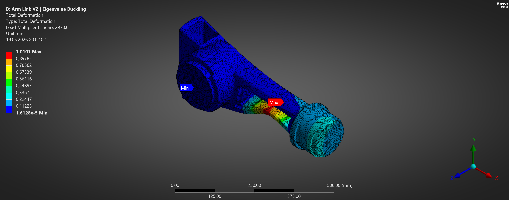
The V1 baseline was not structurally weak. It showed low stress, very small deformation, and a very high buckling load multiplier under the selected load case. The purpose of the redesign was not to fix a failed part, but to improve mass efficiency while keeping the structural response within a safe range.
The topology result helped identify where material had lower structural contribution. Based on this, the V2 design removed material mainly from the middle and rear body regions while keeping the main hub, wrist-end interface, and upper and lower load paths. As expected, the V2 design showed higher stress and deformation than V1, but the final values remained low.
The buckling multiplier decreased significantly after material removal, which confirms that the lightweight cutouts reduced the global stiffness of the arm link. However, the first V2 buckling multiplier remained at 2,970.6, so buckling was not a limiting issue for the selected load case.
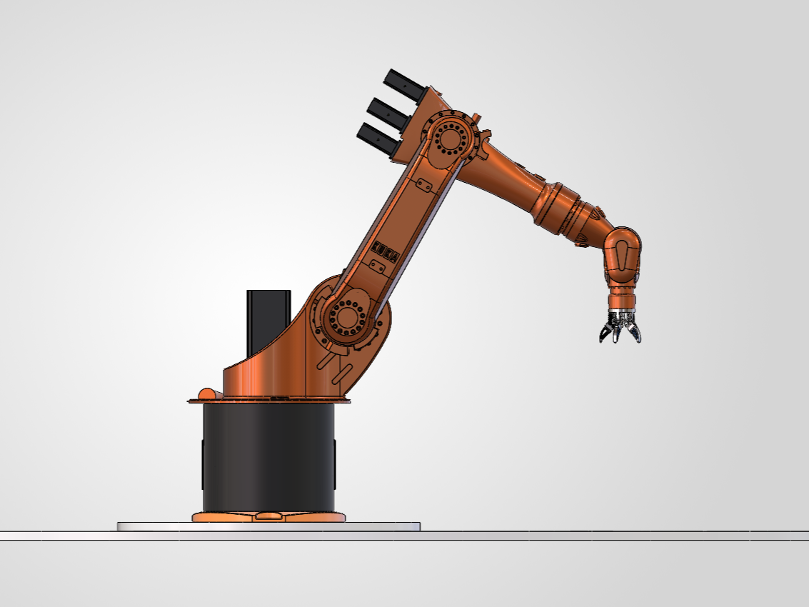
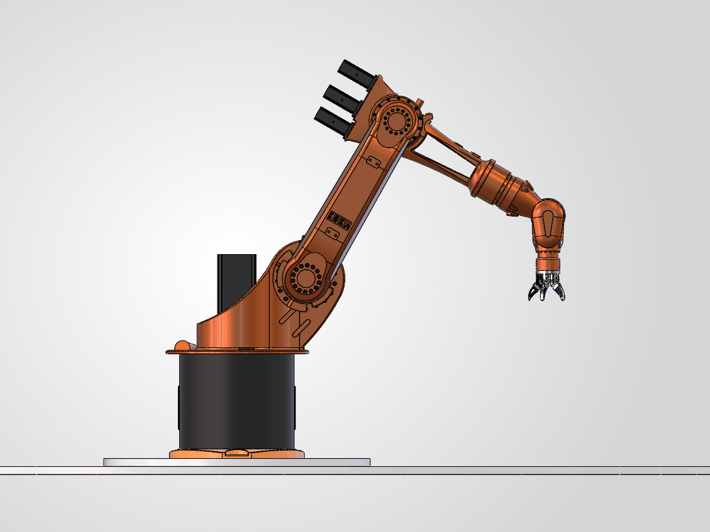
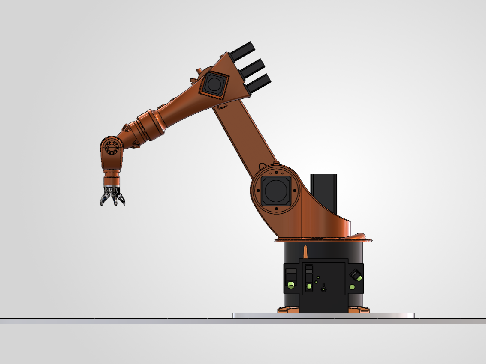
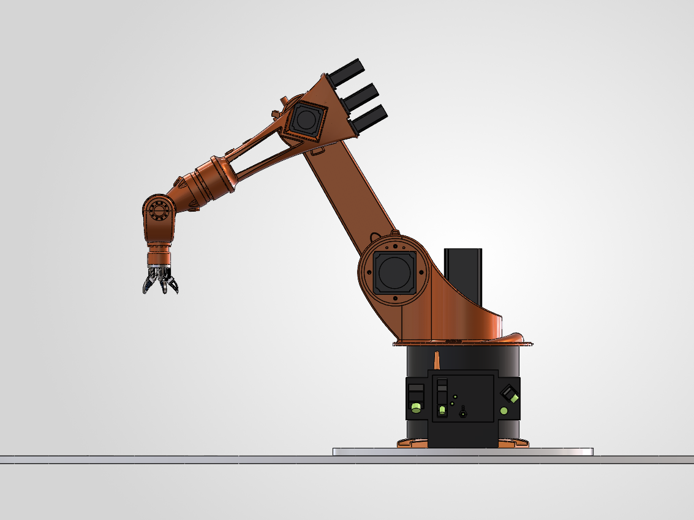
The final V2 robot arm link achieved a 26.22% mass reduction compared with the V1 baseline. Static mesh convergence showed stable results, with the medium-to-fine difference remaining below 1.5% for stress, deformation, and elastic strain in the V2 model. The final V2 stress increased to 6.1475 MPa, but the absolute value remained low for the selected material and load case. At 6.1475 MPa, the final stress represented approximately 1.2% of the material yield strength, confirming a large structural safety margin.
The first buckling load multiplier decreased from 20,303 to 2,970.6 after material removal. Despite this reduction, the value remained far above the critical threshold of 1.
Based on the static and buckling checks, the topology-based V2 design improved mass efficiency while maintaining a large structural stability margin.
Mechanical engineer focused on mechanical design, CAE, and engineering analysis. This portfolio showcases selected projects in FEA, simulation, optimization, and mechanical design, with applications in manufacturing, automation, and robotics.
Resume: Taylan Daldal
LinkedIn: linkedin.com/in/taylandaldal
Email: daldaltaylan@gmail.com